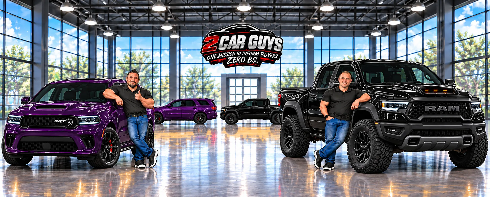

Same Model. Different Trims.
Know what you gain — and what you give up.
Compare factory-standard equipment across trims, from screen sizes and seating to trail hardware. Start with Sahara and Rubicon, then explore Chrysler, Dodge, Jeep and Ram.
Wrangler Sahara
2026 · 4-door · trim illustration
2026 · 4-door · trim illustration
Wrangler Rubicon
2026 · 4-door · trim illustration
2026 · 4-door · trim illustration